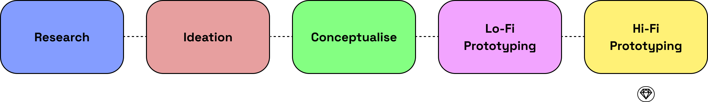
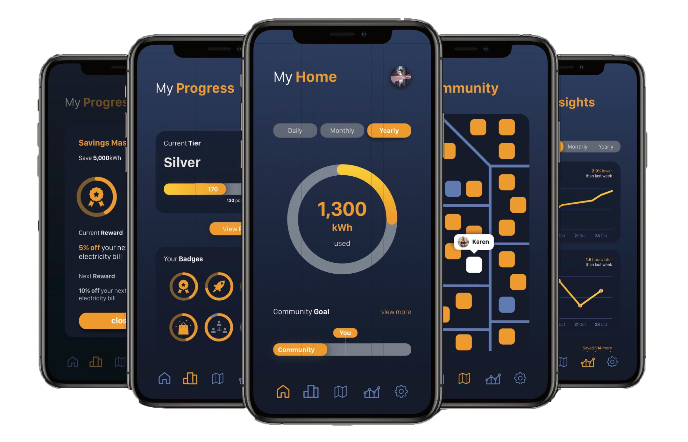

Role: UX Researcher
Timeline: 3 Months (Aug - Oct 2019)
Tools: Sketch, Trello
Overview
Kilowatt is a concept app created during my study at the University of Sydney. It is designed to track energy usage whilst providing rewards and incentives when users hit milestones or targets. It was part of a project designed by the Design for Innovation class.
Context
The gradual increase in electricity bills and energy usage by homeowners over the decade has resulted in spending constraints to meet financial commitments. A solution that homeowners have resorted to was switching to renewable energy such as solar energy. The solution shifts the focus from the reliance on grid energy to self-generated energy as it would reduce the cost of electricity bills. Although there has been a rise in the installation of solar panels in homes, the return on investment of solar energy is still a high price to pay for some homeowners.
Design Process
Research
Online Ethnography
Online Enthnography was used to investigate past solutions that were created to tackle the issue of high electricity bills and tracking household electricity usage. The method was used to determine how certain solutions succeeded in some areas and why it failed in others. It provided guidelines and criteria for potential solutions to succeed.
Ideation
Design Criteria
- Provide full visibility over a household’s energy usage
- Provide the user with live energy usage data
- Contain the management tools and insights that are required
- Provide a platform for energy users to generate another stream of revenue to assist in reducing personal energy costs
- Educate users on energy
- Create a community based off energy usage
- Provide a gamified competitive environment to create further incentives to reduce energy usage
Conceptualise
Brainwriting 6-3-5
Brainwriting was surprising on the most helpful tools as it ensured new and bold ideas are generated through a collaborative session. Cycling ideas through each group member provided a fresh perspective for each concept which made us consider fresh aspects that we might not have considered individually.
By building on each others ideas allowed us to flesh out our chosen concepts. As a result, we generated 2 unique concepts that adhered to the design situation and specifications outlined.
- Live Energy Tracking allows users to view and track live energy usage. It quickly finds high energy usage culprits and sets up instant alerts or even turn them off. It provides an independent source of mobile energy tracking.
- Energy Trading allows users to purchase and sell their personal generated energy. It offers another stream of income for users and provides other buyers for energy besides the local grid. It encourages the use of renewable energy as it assists in generating income.

Solution Diagramming
Using the solution diagramming method allowed us to map out and visualise the key features of the app. As a result, we had identified 4 key components we wanted to explore further. The home screen allow the user to see the households energy usage and current contribution in relation to the community goal, the insights tab which will highlight key information such as peak energy hours and total energy savings, the map tab will show the community map where you can view other households energy usage and the rewards tab where you can redeem points earned by saving energy to unlock energy utilities discounts.

Low-Fidelity Wireframes
We created a number of low fidelity wireframes of the home, insights, rewards and community screens, each highlighting different elements and their visual hierarchy and user tested it with homeowners. This was an important stage in our design process as it allowed us to understand how our concept would be received by one of our core stakeholders. As a result, we gained valuable feedback on which elements users preferred for example, wanting more interactive visuals to convey insights rather than just displaying key data. Furthermore, it exposed issues that we might not have considered such as privacy issues while sharing data with other households. As a result, users are able to set their privacy constraints and control how much of their data is being shared.


Design Solution
Kilowatt is a mobile concept application that encourages your community to reduce household energy usage through rewards and incentives. It provides live household energy tracking and incentives your community to meet energy saving goals. By working towards community energy goals, users can earn points that can be redeemed for energy utilities discounts.
Kilowatt creates community energy goals and targets so individual households feel like they are a contributing part as opposed to competition with their neighbours. As part of a community, households will be more determined to reduce their energy usage by being able to compare their energy usage with their surrounding neighbourhood.
Kilowatt provides insights and patterns of a local area’s energy usage. Councils will access to this information can find value in being able to determine energy usage trends and work with government or energy providers to create better offerings to households. Meanwhile, energy providers are able to utilise a deeper understanding of more personalised geographic and psychographic data and can provide better tailored solutions to consumers.
High-Fidelity Designs

Evaluation of Solution
During the exploration of concepts, three opportunity statements were found:
- Consumer households still connected to the grid are becoming increasingly interested in having greater control and management over their energy utilities. This includes finer, more accurate, minute-by-minute live tracking and monitoring energy usage tools.
- Self-generated households are increasing in number each year and more homes are providing energy back to the local grid or energy distributor at a fixed rate. However, households seek opportunities to achieve another or better stream of revenue.
- With the rise of energy usage and costs in households, there has been an increased demand in assisting consumers who aim to lower their energy costs through electricity management.
The opportunity statements revolved around the management of energy usage. From these opportunity statements, a design brief was created to provide a criteria that the solution had to achieve, consider features that the solution had to implement and consider some constraints that solutions will be working within and around.
A,B,E, of inspiration and brainwriting exercises were taken for the ideation process. A,B,E of inspiration gave better understanding of motivations and underlying behaviours associated with the current context and how the proposed context was going to change. Brainwriting allowed ideas to be passed through each group member to provide a fresh perspective for each concept and the consideration of aspects that may have not been considered individually.
Feedback
Feedback from the tutors and class revealed that the utilisave concept best suited for the context of utilities, as it provided an incentive platform for users to reduce household energy. Utilisave was then rebranded as Kilowatt, a mobile phone application. Kilowatt incorporates the function of live energy tracking whilst providing incentive to reducing energy usage by offering rewards for hitting community and personal targets. Kilowatt targets not only household owners but also councils as it illustrates the peak energy usage areas. Kilowatt aims to build a community around energy usage through providing community goals and rewards.